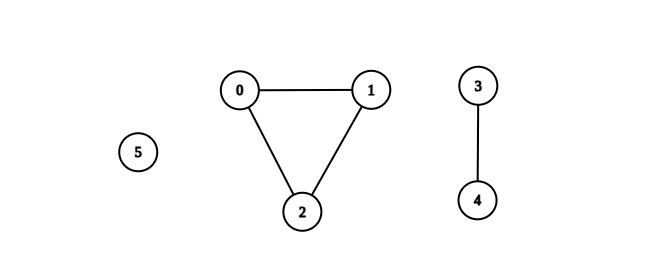
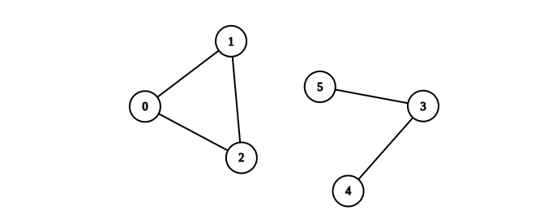

| Category | Difficulty | Likes | Dislikes |
|---|---|---|---|
| Algorithms | Medium | 1247 | 32 |
depth-first-search | breadth-first-search | union-find | graph
amazon | google
You are given an integer n. There is an undirected graph with n vertices, numbered from 0 to n - 1. You are given a 2D integer array edges where edges[i] = [ai, bi] denotes that there exists an undirected edge connecting vertices ai and bi.
Return the number of complete connected components of the graph.
A connected component is a subgraph of a graph in which there exists a path between any two vertices, and no vertex of the subgraph shares an edge with a vertex outside of the subgraph.
A connected component is said to be complete if there exists an edge between every pair of its vertices.
Example 1:

Input: n = 6, edges = [[0,1],[0,2],[1,2],[3,4]]
Output: 3
Explanation: From the picture above, one can see that all of the components of this graph are complete.Example 2:

Input: n = 6, edges = [[0,1],[0,2],[1,2],[3,4],[3,5]]
Output: 1
Explanation: The component containing vertices 0, 1, and 2 is complete since there is an edge between every pair of two vertices. On the other hand, the component containing vertices 3, 4, and 5 is not complete since there is no edge between vertices 4 and 5. Thus, the number of complete components in this graph is 1.
Constraints:
1 <= n <= 500 <= edges.length <= n * (n - 1) / 2edges[i].length == 20 <= ai, bi <= n - 1ai != bi